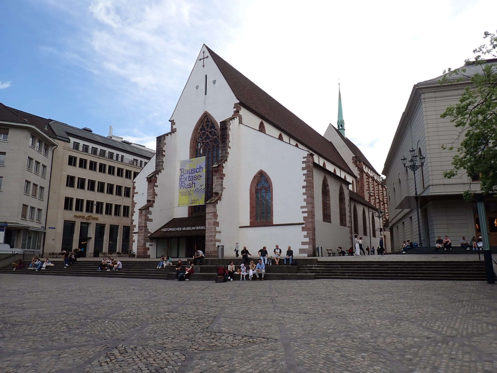

300 Jahre bevor Martin Luther 1517 mit seinen Thesen für Aufsehen sorgte, erstreckte sich das Gelände des Barfüsserklosters noch bis zum heutigen Casinoareal. Die imposante Kirche der Bettelbrüder prägt bis heute den Barfüsserplatz. Auf eben diesem befand sich damals das Barfüsserkloster, das von den sogenannten ‹Barfüssermönchen› bewohnt wurde. Heute ist das Innere der Klosterkirche nicht mehr vom Gebet der Minderen Brüder des Heiligen Franziskus von Assisi (1181/82–1226) erfüllt, sondern vom Raunen der staunenden Museumsbesucher:innen, die täglich das ehemalige Gotteshaus durchschreiten.
Sicht vom Bafürsserplatz auf die dreischiffige Barfüsserkirche, 2024. (Bild: Elisheba Schmid)
Wie der Barfüsserplatz zu seinem Namen kam
Die Klosterbrüder siedelten sich im Jahre 1231 in Basel an. Zunächst
befand sich ihr Kloster allerdings ausserhalb der Stadtmauer vor dem
Spalentor. Dort sahen sich die Franziskaner-Brüder ständigen Gefahren
ausgesetzt. Erst 1250 durften sich die Ordensmänner, dank Bischof
Bertold II. († 1262), auf dem Barfüsserplatz niederlassen. Dieser
Standort war für die Brüder ideal. Der stetige Strom von Reisenden, die
die anliegende ‹Freiestrasse› durchschritten, brachte den Minoriten
(mindere Brüder) beständig Almosen ein. So kam die ‹Mildegabe› nicht nur
den Bettelbrüdern zugute, sondern nach damaligem Glauben auch dem
Seelenheil der Spender:innen. Trotzdem behielt das Kloster seine Lage am
Stadtrand, wo die Bettelorden oft die Seelsorge verrichteten und sich um
Randständige kümmerten.
Die erste Barfüsserkirche entstand zwischen 1250 und 1256. Sie wurde
zusammen mit dem Kloster errichtet, das die Brüder in den kommenden
Jahrhunderten bewohnten. Sie war eine der ältesten Langchorbauten und
steht so exemplarisch für die Bettelordensbaukunst am Oberrhein. Doch
sie sollte nicht lange bestehen bleiben.
Eine Kirche, die alle übertrumpfen soll
Die zweite Barfüsserkirche entstand zwischen 1275 und 1309. Sie mauserte
sich zur grössten Bettelordenskirche innerhalb der heutigen Schweiz. Aus
welchem Grund so kurz nach dem Bau der ersten Kirche eine zweite
errichtet wurde, ist unklar. Ein möglicher Grund könnte ein Brand
gewesen sein, der 1298 erstmals erwähnt wurde, vielleicht ging es aber
auch darum, die anderen Basler Klöster zu übertrumpfen.
Während dem 14./15. Jahrhundert wurde das Kloster erneut vergrössert.
Unter anderem wurde das Refektorium, der Kreuzgangsflügel und das
Kapitelhaus unterkellert, das Dachwerk des Klosters entstand und auch
der Kreuzgang erhielt eine Erweiterung.
Über die Zahl der im Koster lebenden Brüder gibt es nur wenige
Informationen. 1408 hielten sich lediglich 13 Mendikanten (Bettelbrüder)
im Barfüsserkloster auf. 1482 waren es bereits 80 Brüder. Die
Klosterreform (15. Jh.) hatte zu einem Aufschwung geführt. Doch die
Hoffnung auf eine grosse Zukunft wurde bereits nach 47 Jahren endgültig
vernichtet.
Der Niedergang des Klosters
Das Kloster bekam 1529 die vollen Auswirkungen der Reformation zu
spüren. Das Heim der Mendikanten wurde aufgehoben und gelangte in den
Besitz der Stadt Basel. Doch die Brüder hatten bereits einige Jahre vor
dem endgültigen Ende des Klosters mit schwindendem Nachwuchs zu kämpfen.
Unter dem heutigen Barfüsserplatz befand sich einst der Klosterfriedhof.
Die Gebäude, die zuvor die Brüder beherbergt hatten, behielten ihren
karitativen Zweck. Sie beherbergten nun Schulen, Armenpflegen und das
Spital.
Der Chor wurde kurzerhand zum Getreidespeicher umfunktioniert. Die
Kirche, die bis 1794 den Reformierten als Gotteshaus gedient hatte,
wurde 1795 zwischenzeitlich als Lagerhaus genutzt, um ab 1799
schliesslich zu einem Salzlager umfunktioniert zu werden. Das sollte
über 100 Jahre danach noch ungeahnte Konsequenzen nach sich ziehen.
Im Jahr 1843 wurde das Klostergebäude, beinahe 600 Jahre nach seinem
Entstehen, endgültig abgebrochen.
Die Kirche blieb jedoch bestehen. Da keiner so genau wusste, was man nun
mit diesem imposanten Gotteshaus anfangen sollte, nahm es in den
kommenden Jahrzehnten viele Aufgaben wahr. So fand sie Verwendung als
Postlokal, sie wurde ein ‹Ankenmarkt› (Buttermarkt), eine
Pfandleihanstalt, ein ‹Gantlokal› (Versteigerungshaus) sowie eine
Lagerhalle. Und an weiteren Ideen mangelte es nicht. Auch die Nutzung
als Bibliothek, Schulhaus, Schwimmhalle, Turnhalle, Staatsarchiv oder
Markthalle waren im Gespräch. Doch sie konnten sich alle nicht
durchsetzen.
Aussenansicht Historisches Museum Basel, 2024. (Bild: Elisheba Schmid.)
Die Stadt Basel entschied sich gut 47 Jahre nach Abbruch des Klosters dafür, dem umgewidmeten Gotteshaus mit dem Historischen Museum Basel eine neue, permanente Bestimmung zukommen zu lassen. Der erste Umbau wurde von 1890–1894 vorgenommen. 1964 hatten die Schäden, die die Nutzung als Salzlager angerichtet hatte, ein so enormes Ausmass angenommen, dass das Museum 1975 einer Totalsanierung unterzogen werden musste. Bei dieser Gelegenheit wurde das Untergeschoss eingebaut, wodurch die Ausstellungsfläche stark vergrössert wurde.
Wenn Geschichte die Geschichte birgt
Auch wenn viele der Spuren, die die Franziskaner in der Stadt Basel hinterlassen haben, heute nicht mehr auf den ersten Blick sichtbar sind, und grosse Teile des Klosters nur noch archäologisch erschlossen werden können, erinnern sowohl der Barfüsserplatz als auch die Barfüsserkirche, die auch heute noch das Stadtbild Basels prägen an die ‹Barfüssermönche› und ihre Präsenz. Wer also heute das Historische Museum Basel besucht, ist von allen Seiten von der lebendigen und bedeutsamen Geschichte dieses Ortes umgeben. Auch wenn man vor lauter Geschichte manchmal nicht bemerkt, dass man sich selbst mitten in ihr befindet.
Elisheba Schmid ist Theologiestudentin im Bachelor an der Theologischen Hochschule Chur.
Weitere Artikel von {{ author.author }} finden Sie hier:
Zur Vertiefung:
- Flatscher, Elias / Bernasconi, Marco: «Das Barfüsserkloster und die Barfüsserkirche (1254-1529 n. Chr.)», in: Archäologische Bodenforschung, des Kantons Basel-Stadt. 1000 Jahre Basler Geschichte: Archäologie unter dem Musiksaal des Stadtcasinos, Basel 2020, 138–175.
- Historisches Museum Basel: Geschichte der Barfüsserkirche, verfügbar unter: www.hmb.ch (12.05.2024)